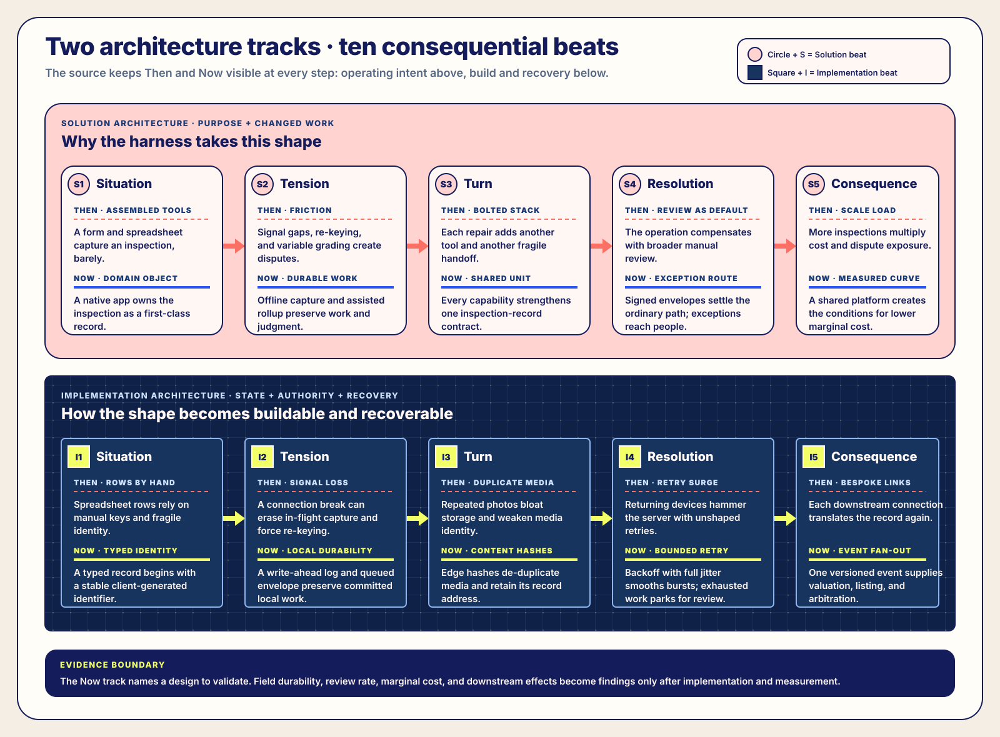
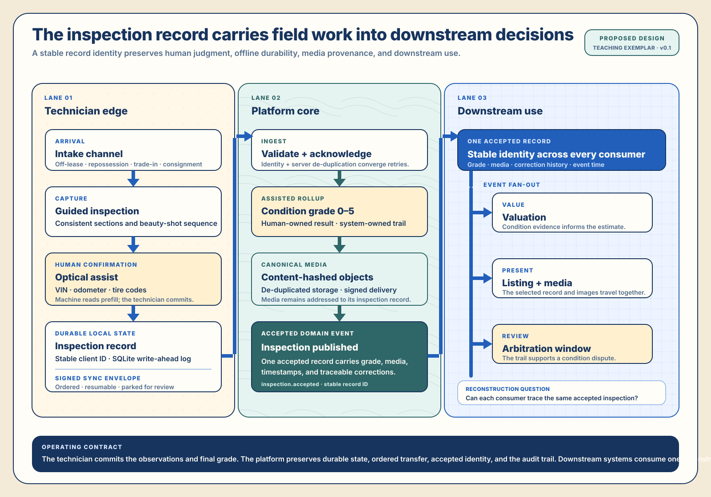

Ongoing Site Reading · Teaching exemplar · Version 0.1.0
Distributed Inspection Harness for Field Technicians
Design the inspection record before the app
A lender-and-auction remarketing operation needs consistent vehicle inspections across lots, driveways, and storage
yards where connectivity varies. I am developing this ongoing reading from named public grading standards,
publicly documented inspection capabilities, and public remarketing practice to make one common build inspectable
before implementation begins.
At-a-Glance
I am developing this ongoing teaching exemplar for a lender-and-auction remarketing setting. It makes offline inspection, private media, identity, grading, synchronization, and the observations required after implementation inspectable in one versioned specification.
Situation and stakes
A lender-and-auction remarketing operation needs consistent vehicle inspections across lots, driveways, and storage yards where connectivity, devices, and media transfer vary.
Scope and role
I designed version 0.1.0 as a source-native instrument that teams can use with generative AI systems across field inspection, downstream valuation, listings, and arbitration.
Core constraint
Capture, grades, media, identity, and synchronization can diverge across assembled tools. Public grading and inspection references orient the domain without specifying one local implementation.
Key decision
Design one inspection record before the app, with stable identity, human-confirmed observations, a human-owned grade, media hashes, explicit sync state, and reconstructable downstream events.
Outcome and evidence
I produced a versioned specification that makes the scenario, ontology, operating contracts, population authority, quality gates, and investment sequence inspectable before code. Field and recovery trials must establish delivered performance.
Relevance now
The reading demonstrates how specification by example can reduce ambiguity in offline-first, media-heavy systems while keeping human judgment and downstream consequence connected.
Basis and limits: Public sources ground the domain vocabulary and common practices; I synthesized them into the proposed architecture. A receiving implementation must establish field durability, recovery, security, operating cost, dispute reduction, and downstream outcomes.

Figure 1. The complete source-native arc. The upper track carries operating intent and changed work;
the lower track carries implementation state, recovery, and downstream contracts. Written labels, S/I prefixes,
distinct marker shapes, and Then/Now rules preserve the distinction beyond color.
I. Scenario + ontology — One record, several operating contexts
Vehicles arrive through off-lease returns, repossessions, trade-ins, and consignments. A technician establishes
condition on site, often beyond dependable network coverage, and records exterior, interior, mechanical,
frame, tire, damage, and photographic evidence. The accepted record then supports a condition grade,
valuation, listing, and a later arbitration window.
The reading’s self-contained operating vocabulary
Term
Meaning in this reading
Why it changes the architecture
Intake channel
How a vehicle arrives: off-lease, repossession, trade-in, or consignment.
Capture stays consistent while arrival context remains explicit.
Inspection record
The complete standardized capture for one vehicle at one point in time.
Every retry, image, correction, grade, and downstream event shares one stable identity.
Condition grade
A 0–5 rollup derived from section scores and declared damage points.
The human-owned summary stays traceable to its inputs.
Beauty shot
A marketing-quality photograph captured in a fixed sequence.
Media capture serves both condition evidence and listing presentation.
Capture kit
The technician’s device, guided form, camera, and optical readers.
Device and field constraints become part of the solution boundary.
Sync envelope
A signed, ordered batch of records and media queued for upload.
Offline work can resume, retry, and settle into an inspectable state.
Arbitration window
The post-sale period in which condition disputes are adjudicated.
The accepted record must remain reconstructable after listing and sale.
Table 1. The ontology keeps one reading self-contained across technicians, reviewers, platforms, and downstream consumers.
Public-source horizon
What the exemplar works backward from
Published-style 0–5 grading across interior, exterior, mechanical, frame or underbody, and tires.
Point-based damage grading administered through shared remarketing inventory services.
Common public inspection-app capabilities: VIN or plate reads, guided photographs, damage labels, summaries, offline capture, and later synchronization.
Off-lease and repossession remarketing practice, including as-is disclosure sensitivity and valuation against published loan and retail guides.
Condition-grade vocabulary
The published-style 0–5 scale
Table 2. Grade labels used by this reading
Grade
Meaning
5
Excellent condition
4
Better than average
3
Normal wear and tear
2
Excessive wear and tear
1
Signs of severe abuse
0
Inoperative
II. Then → Now — Changed work at a glance
From assembled tools to a purpose-built inspection harness
Dimension
Then — assembled tools
Now — purpose-built harness
Changed ability
Capture
Low-code form builder plus a spreadsheet backend.
Native offline-first mobile app for iOS and Android.
The inspection becomes a first-class domain object.
Optical reads
Manual VIN and odometer entry.
On-device OCR for VIN, odometer, and tire codes with human confirmation.
Assistance accelerates entry while the technician makes the final committed entry.
Connectivity
Signal required; re-keying follows failure.
Offline queue with ordered, resumable sync envelopes.
Captured work persists across interruption and return.
Media
Ad hoc photos in a gallery.
Guided beauty-shot sequence, content-hashed, de-duplicated, and CDN-served.
Condition evidence and listing media remain addressed to the same record.
Grading
Manual scoring with variable application.
Assisted rollup to a 0–5 grade with an audit trail.
The final grade remains human-owned and reconstructable.
Downstream
Copy-paste into valuation and listing.
Event stream into valuation, arbitration, and listing.
Every consumer receives the same accepted inspection identity.
Table 3. Each Now statement is a current design target whose field performance remains to be tested.

Figure 2. The technician commits observations and the final grade. The platform preserves durable state, ordered transfer,
accepted identity, canonical media, and the correction trail. Downstream systems consume one reconstructable record.
S · Solution Architecture Operating intent and changed work
III. Solution Architecture — Why the harness takes this shape
The solution reading stays independent of a particular stack. It names the capabilities, boundaries, and
integral decisions that make field work durable and downstream use coherent.
Capabilities the solution must carry
Capability
Responsibility
Guided capture
Walk a technician through a consistent inspection regardless of intake channel.
Optical assist
Read VIN, odometer, and tire codes, always with human confirmation.
Offline durability
Preserve the record while the network is unavailable.
Ordered sync
Upload records and media in a resumable, tamper-evident order.
Grade rollup
Derive a defensible 0–5 grade with an audit trail.
Downstream fan-out
Feed valuation, listing, and arbitration from one accepted source.
Table 4. Six solution capabilities establish the operating contract before a stack is selected.
The source-native five beats
S1
Situation · make capture a domain concern
Then · assembled tools
A form builder and spreadsheet can collect rows, yet the vehicle, one inspection event, its photographs, its grade, and its correction history remain only loosely related. Each handoff asks people to reconstruct which artifacts belong together.
Now · purpose-built harness
The inspection becomes a first-class domain object with a stable identity. Guided sections, optical suggestions, committed observations, media references, grade, and sync state all address the same record. Intake channel remains explicit while capture grammar stays consistent.
Boundary to validate. The record model must fit off-lease, repossession, trade-in, and consignment work while preserving channel-specific evidence.
S2
Tension · keep field work durable
Then · operational fracture
Connectivity gaps interrupt capture, re-keying adds labor, ad hoc photographs lose their place, and variable application of grading criteria creates dispute exposure. The technician must carry too much system state in memory.
Now · explicit assistance and state
Offline-first capture treats the network as intermittent. Optical reads prefill VIN, odometer, and tire values for human confirmation. The grade remains human-owned while the system preserves the scoring inputs and correction trail.
Authority. Assistance proposes; the technician commits. A reviewer can later distinguish the machine suggestion, the accepted value, and the final human-owned grade.
S3
Turn · organize around one shared unit
Then · accumulated fixes
Each repair bolts another tool onto the stack: one place for data entry, another for photographs, another for retry, and new copy-paste paths for every downstream consumer. Local improvements create additional seams.
Now · compounding contract
The inspection record becomes the unit of capture, synchronization, review, and publication. New capabilities strengthen the same contract: media hashes address the record, sync envelopes carry it, and versioned events publish its accepted state.
First responsible version. Offline capture, optical confirmation, ordered sync, and grade rollup enter first. Automated damage detection, multi-language capture, and a buyer self-serve view remain deferred.
S4
Resolution · make review an exception route
Then · review as compensation
The operation responds to uncertain identity, transfer, and grading by adding broad manual review. Reviewers spend attention rediscovering ordinary state before they can examine consequential exceptions.
Now · inspectable ordinary path
Signed, ordered envelopes make transfer state visible. A grade trail keeps rollup and override reasons together. Acknowledged records settle through the ordinary path; exhausted retries and questionable records park in an explicit human-review queue.
Expectation. The technician needs reassurance that work is safe; the reviewer needs a defensible exception; the arbiter needs a reconstructable trail.
S5
Consequence · turn scale into a measured question
Then · scale multiplies seams
Additional inspections multiply entry labor, media handling, review, bespoke integrations, and the number of places where a condition dispute can lose its evidence trail.
Now · shared capability creates leverage
A durable record and common fan-out create the conditions for lower marginal inspection cost, faster time-to-sale, trusted listings, lower arbitration cost, and a structured condition-data asset. These remain opportunity hypotheses until field observations establish the outcomes.
Measurement boundary. Field throughput, dispute rate, review rate, time-to-sale, post-sale mismatch, and per-inspection cost establish whether the proposed consequence appears.
I · Implementation Architecture State, recovery, and local decision authority
IV. Implementation Architecture — How the shape becomes buildable
The implementation reading makes the data model, local persistence, transfer protocol, media route, and access
boundaries concrete. Each technology choice serves an operating contract named above.
A proposed reference stack for the Now track
Layer
Choice
Reason
Mobile
React Native with a thin Swift camera and OCR module.
Shared application code with native optics where it matters.
Local store
SQLite with a write-ahead log.
Durable offline capture.
Sync
Signed, ordered envelopes over HTTPS with resumable upload.
Tamper-evident and connectivity-tolerant transfer.
Ingest
Stateless API behind a queue.
Returning technicians can create a burst while acknowledged work remains durable.
Media
Content-hashed object storage plus CDN.
De-duplicated storage and fast signed delivery.
Access
Role-based access control.
Technician, reviewer, and arbiter responsibilities remain distinct.
Table 5. Each reference-stack choice is accountable to a named field, recovery, media, or authority requirement.
The client-generated ID stays stable across retry. Raw optical suggestions and human confirmation state remain distinguishable. The grade is a human-owned summary whose inputs remain available for review.
Recovery contract · ordered envelope
Retry has a bounded path and a human landing place
for attempt in 1..6:
upload ordered envelope resumably
if acknowledged:
mark envelope acked
publish accepted record
stop
wait exponential backoff + full jitter
park exhausted envelope for manual review
The queue absorbs returning-device bursts. Record identity lets ingest recognize retries. Bounded backoff shapes demand and gives each exhausted envelope a visible review state.
The source-native five beats
I1
Situation · give every inspection stable identity
Then · manually keyed rows
Spreadsheet rows depend on hand-entered keys and positional context. A retry, copied row, or renamed photograph can create multiple plausible identities for the same inspection.
Now · typed record
A client-generated identifier exists before network contact and remains stable across synchronization. A typed record constrains intake channel, optical reads, section scores, grade, media hashes, and sync state into one addressable object.
Validation. Duplicate delivery must resolve to the same record identity while later corrections remain explicit supersessions.
I2
Tension · persist before transfer
Then · connection-coupled work
A lost signal interrupts capture and can force the technician to reconstruct work. “Saved” and “received by the platform” collapse into one ambiguous state.
Now · local write-ahead log
SQLite with a write-ahead log commits field work locally. A queued sync envelope separates local durability from platform acknowledgement, allowing the interface to state local, queued, and acknowledged conditions in words and status markers.
Field drill. A forced-offline inspection should retain every committed field and media reference and return with an explicit queued state.
I3
Turn · address media by content
Then · duplicate photographs
Ad hoc gallery images rely on filenames and folders. Repeat capture and repeat transfer bloat storage, and the relationship between an image, its required view, and its inspection can drift.
Now · content-hashed objects
The edge computes media hashes, the platform de-duplicates objects, and required beauty-shot positions remain named. Object storage plus a content delivery network serves canonical media while the inspection record retains the references.
Validation. Repeat upload of the same content should preserve one canonical object and retain the record’s ordered view references.
I4
Resolution · shape retry and expose exhaustion
Then · synchronized retry surge
Returning technicians and recovering devices can retry together, hammering ingest at the moment connectivity resumes. A generic failure message leaves the recovery object unnamed.
Now · backoff, jitter, and parking
Signed, ordered envelopes upload resumably. Exponential backoff with full jitter distributes retries. Server-side de-duplication uses record identity. After the bounded retry path, the envelope parks for manual review with its record and error context intact.
Quality authority. The reviewer resolves a named envelope; the system preserves attempt and acknowledgement state.
I5
Consequence · publish one accepted event
Then · bespoke integrations
Valuation, listing, and arbitration each receive hand-translated data. Their copies can disagree about grade, media, event time, or whether a later correction superseded the first record.
Now · versioned fan-out
A stateless ingest path validates and acknowledges the envelope, the human-owned grade remains traceable to inputs, and one accepted inspection event carries stable identity, canonical media, timestamps, and corrections to downstream consumers.
Validation. Each consumer must trace the same accepted record and identify a later supersession directly from versioned event history.
V. Operating contracts — What survives each boundary
A technology choice is useful here when it makes one of these contracts easier to keep under weak signal,
duplicate delivery, human correction, large media transfer, or later dispute review.
Seven contracts that keep one inspection reconstructable
Contract
Human responsibility
System responsibility
Recoverable state
Record identity
Select the correct vehicle and intake context.
Create a stable client identifier that survives retries.
Every correction and downstream event returns to one record.
Optical confirmation
Confirm or replace the suggested VIN, odometer, and tire values.
Preserve raw suggestion, committed value, and confirmation state.
A reviewer can distinguish machine suggestion from human commitment.
Local durability
Complete the inspection while connectivity changes.
Commit each field and media reference to durable local storage.
A forced-offline drill returns to an explicit local or queued state with committed fields intact.
Ordered sync
Resolve a parked envelope when the system requests review.
Sign, order, retry, de-duplicate, acknowledge, and park envelopes.
The transfer resumes with each accepted record represented exactly once.
Condition grade
Own the final 0–5 grade and any override reason.
Assist the rollup and retain its inputs and correction trail.
A dispute can reconstruct how the accepted grade was formed.
Canonical media
Capture the required views in sequence.
Hash, de-duplicate, store, and deliver media against the record.
Condition evidence and listing images retain a stable source.
Event fan-out
Review the accepted record where professional judgment is required.
Publish one versioned event to valuation, listing, and arbitration consumers.
Every consumer can identify the same accepted inspection and later supersession.
Table 6. Human judgment, system state, and recoverable evidence stay explicit at each boundary.
VI. Populations + quality — Who sees, decides, checks, and learns
The harness serves several populations through different attention instruments. Field authority stays with the
person making and reviewing the condition judgment; system authority stays with persistence, transfer state,
provenance, and consistent publication.
Population cartography: interface or view, attention need, authority, and quality question
Population
Primary interface or view
Attention need
Authority
Quality question
Field technician
Guided capture + sync status
Next required field, speed, and reassurance that committed work is safe.
Confirms optical reads and owns the final condition grade.
Can the technician finish in weak signal and distinguish local, queued, and acknowledged state?
Reviewer
Exception queue + grade audit
Records that need judgment and the evidence that explains why.
Resolves parked envelopes and reviews grade inputs or overrides.
Does one record make transfer state explicit enough to resolve the exception?
Remarketing lead
Grade + dispute view
Consistency, operating throughput, and arbitration exposure.
Sets operational thresholds and commissions corrective work.
Are review, dispute, and post-sale mismatch signals moving together or diverging?
Buyer
Listing + canonical media
Trustworthy condition presentation.
Uses the published evidence; professional grading remains upstream.
Does the listing match the accepted record and its selected media?
Arbiter
Inspection audit trail
Evidence, event time, correction history, and disclosure context.
Adjudicates the post-sale condition dispute.
Can the accepted grade be reconstructed from committed observations and later supersessions?
Table 7. The same record supports each role; each interface or view presents the state needed for that population’s decision.
Quality posture: target condition, source-earned check, and evidence state
Target condition
Check carried by the reading
Human decision
Evidence state
Durable field work
Forced-offline drill: complete a record beyond signal, restore connectivity, and inspect local → queued → acknowledged transitions.
Technician confirms the restored record represents the work completed.
Acceptance test for a future implementation.
Human-confirmed optical reads
Present high-confidence OCR as prefill and route low-confidence reads to manual entry; retain raw and committed values.
Technician confirms or replaces each read.
Operating contract defined; field error distribution remains to be measured.
Consistent, defensible grades
Retain section scores, damage points, rollup, final grade, and override reason in one trail.
Technician-reported ease, inspections per shift, channel adoption, 90-day technician retention, and the share of records that reach acknowledged state through the ordinary path.
Which signals can reveal a consequence after launch?
Technology-fit + semantic sampling
Offline store fits dead-signal capture; OCR stays human-confirmed; “synced,” “grade 3,” “beauty shot,” and “as-is” need shared meanings.
Does the technology fit the moment, and do humans and systems mean the same thing?
Table 9. The instrument set keeps operating purpose, fit, vocabulary, attention, and measurement connected.
VII. Cost + consequence — Purchase useful capability in a measurable order
Two sequencing plans place useful capability in different orders. Their figures are current planning estimates.source
A build-specific estimate still needs operating volume, incumbent constraints, team capacity, labor rates,
integration access, quality scope, and the cost of keeping the current path running through transition.
Recommended source plan · durable contracts first
Foundation first
Best when: the operation intends to scale and wants the durable boundaries established before the field interface expands.
Foundation · low–mid five figures: ingest API, queue, object storage, CDN, sync contract, and internal package hosting.
Edge app · mid five figures: React Native capture, offline store, optical confirmation, and guided media.
Grade + downstream · low–mid five figures: rollup, audit trail, and event fan-out.
Hardening · low five figures: role boundaries, drills, de-duplication, and observability.
Gate before expansion: the shared identity, persistence, sync, and media contracts survive the forced-offline and duplicate-delivery checks.
Alternative source plan · bounded field learning first
Thin pilot first
Best when: the operation needs field learning before committing to the shared foundation.
Pilot capture · low five figures: offline capture and bounded manual transfer for one intake channel.
Prove the grade · low five figures: assisted rollup and review for the pilot channel.
Expand · mid five figures: generalize the record, transfer contract, and foundation across all channels.
Gate before expansion: the pilot reveals channel-specific conditions, capture time, optical-confirmation burden, grade-review needs, and transfer exceptions.
Opportunity — Elements arranged in context so that positive change becomes reachable.
Here, technicians, reviewers, operators, and sponsors can reach a better field decision through the shared record; the next table pairs each proposed value with the future observations that can establish it.
Downstream consequences remain hypotheses with named observations
Opportunity table: what the proposed harness can unlock and what would demonstrate it
Opportunity to test
Unlocked by
Second-order value
Observation to collect
Lower arbitration cost
Consistent, audited grades.
Direct margin recovery and fewer reconstruction hours.
Dispute rate, time per dispute, and cases resolved from the record trail.
Faster time-to-sale
Accepted-event fan-out.
Less depreciation while holding.
Elapsed time from accepted inspection to valuation and listing.
Trusted listings
Guided beauty shots tied to the accepted grade.
Higher buyer confidence and clearer condition representation.
Post-sale mismatch, missing-media exceptions, and buyer-facing correction frequency.
Condition data asset
Structured records accumulated over time.
Valuation and operating trend insight.
Coverage, semantic consistency, correction history, and downstream reuse.
Future computer-vision assist
A labeled, provenance-bearing media corpus.
Optional assistance after the human-owned grading path is stable.
Label quality, representative coverage, error distribution, and a maintained human-confirmation route.
Table 10. The opportunity page names second-order value; this table pairs each claim with the future observations that can establish it.
What this establishes · investment
The bands orient a planning conversation
Source figures describe order-of-magnitude planning bands for an exemplar. Priced proposal, production
staffing plan, signed pilot, and measured return remain future work. Automated damage detection, a buyer self-serve
condition view, and multi-language capture remain deferred costs. A real estimate names roles, hours,
loaded rates, quality work, run cost, contingency, incumbent continuity, and the validation required at each gate.
VIII. Source docket + design boundary — One orientation with nine direct readings
Docket 08 distinguishes this teaching exemplar from the separate Field Inspection Harness Re-platform. This
page is the canonical orientation for the nine supporting readings. The collection remains at
version 0.1.0 with the reserved standing “exemplar in progress, developing toward convergence.”
Ongoing Site Reading — Distributed Inspection Harness for Field Technicians Orientation, PODA, scenario, ontology, dual track, public-source posture, and reading order.
Solution Architecture Site Reading — Distributed Inspection Harness Capabilities, integral decisions, and the five operating beats.
Implementation Architecture Site Reading — Distributed Inspection Harness Reference stack, typed record, sync protocol, optical pipeline, and five build beats.
Core Architectures — Distributed Inspection Harness PODA, Context Tree, Alignment Worksheet, Strategy Canvas, priority map, HEART, and first responsible version.
Narrative Architecture Prototypes — Technology-Fit and Semantic Sampling Tableaux Technology fit at sampled work moments and vocabulary stability across humans and systems.
Expectation Architecture — Distributed Inspection Harness Floor, comparative, and aspirational expectations made checkable.
Focalization Architecture — Distributed Inspection Harness Attention instruments and population cartography for technicians, reviewers, leads, buyers, and arbiters.
Opportunity Architecture — Distributed Inspection Harness Second-order value and the capabilities that could unlock it.
Costing Plans — Distributed Inspection Harness Foundation-first and thin-pilot sequencing, planning bands, and deferred costs.
Collaboration and recovery remain part of the architecture
Coordinator
Hold the through-line
Record intent before edits, keep the reading order intact, and preserve the proposed-design boundary across turns and platforms.
Contributor + reviewer
Land scoped work and settle questions
Contributors change a bounded page or artifact. Reviewers use comments for open questions and the quiet ledger for durable decisions that must survive resolved discussion.
Quiet ledger decisions preserved from the source collaboration cycle
Date
Decision
Durable consequence
Precipitate the exemplar as a vehicle-remarketing field-inspection harness.
Scenario and ontology remain self-contained and non-identifying.
Optical and grading assistance preserve a visible confirmation route and human authority.
Recommend foundation-first sequencing.
Identity, ingest, storage, sync, and package contracts precede expansion of the edge application.
Table 11. The ledger retains the few decisions that shape every subsequent artifact and recovery turn.
What this establishes · whole reading
The design is ready for implementation testing
I worked backward from published-style condition-grading
scales, point-based damage grading, publicly documented inspection-app capabilities, and public remarketing
practice to design this teaching instrument. Its Now track describes what a team can build and test. Field trials,
recovery drills, security review, operating data, and commercial observation must establish delivered outcomes,
production staffing, signed pilots, measured cost curves, dispute reduction, and return on investment. Proprietary
material and organization identity remain outside this page's source boundary.
The adjacent Field Inspection Harness Re-platform is a
separate, build-specific reading with a named incumbent and staged-capital apparatus. The two pages share
anatomy and some vocabulary; each keeps its own scope, claims, and decision authority.